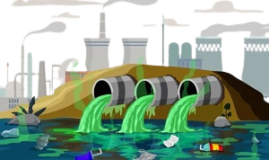

Azcapotzalco es una alcaldía con una importante actividad
industrial, comercial y una alta circulación de vehículos.
Estas características generan problemas de contaminación del
aire, del agua y del suelo, afectando la calidad de vida de
sus habitantes y el equilibrio del medio ambiente.
Actualmente, la contaminación atmosférica es uno de los
principales retos ambientales de la alcaldía. Las emisiones
de automóviles, fábricas y la acumulación de residuos
contribuyen al deterioro ambiental y aumentan el riesgo de
enfermedades respiratorias y cardiovasculares.

Las principales causas de la contaminación son el exceso de
vehículos, las emisiones industriales, la quema de basura,
el uso excesivo de plásticos, la falta de reciclaje y la
disposición inadecuada de residuos sólidos.
Estas actividades afectan gravemente la salud de las
personas y el medio ambiente, provocando mala calidad del
aire, contaminación del agua, pérdida de áreas verdes,
afectación a la fauna y mayores efectos del cambio
climático.

Una de las principales soluciones para disminuir la
contaminación en Azcapotzalco es fomentar la educación
ambiental, promover campañas de reciclaje, reducir el uso
de plásticos y fortalecer el cuidado de las áreas verdes.
También es importante utilizar transporte público,
bicicleta o caminar cuando sea posible, sembrar árboles,
separar los residuos y participar en jornadas comunitarias
de limpieza para conservar un entorno saludable.